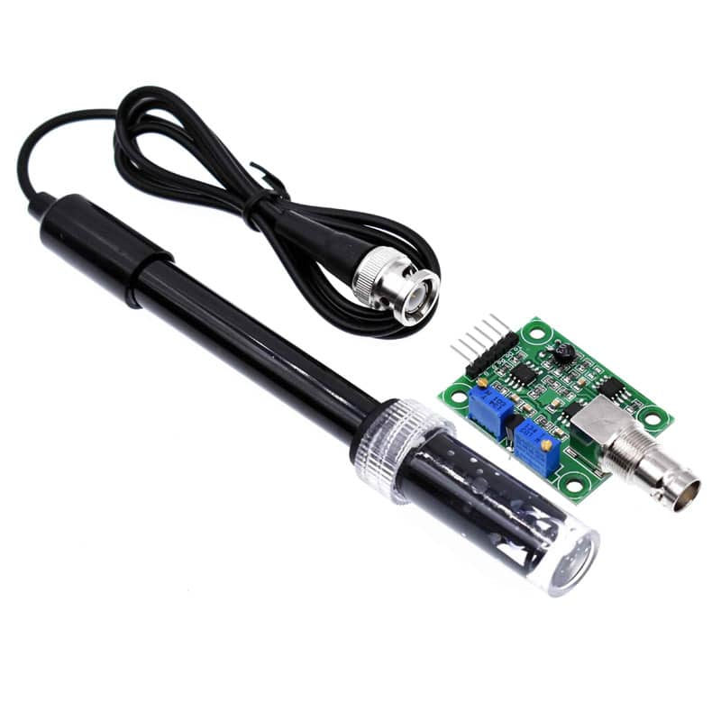
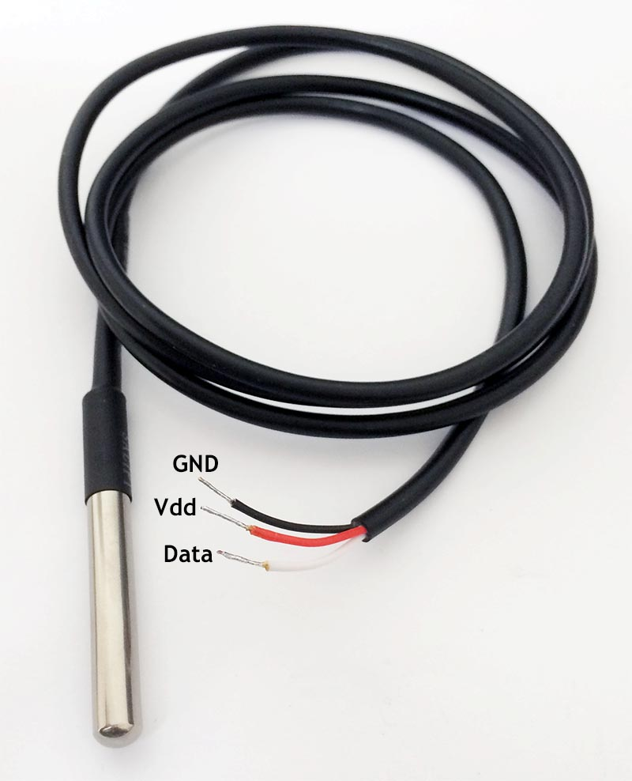

💧 Sensor de pH
El sensor de pH permite medir la acidez o alcalinidad de la solución nutritiva utilizada en el sistema hidropónico.

⚡ Sensor TDS
Este sensor mide la cantidad de sólidos disueltos presentes en el agua en unidades ppm.

🌡 Sensor DS18B20
El DS18B20 permite monitorear la temperatura del agua garantizando estabilidad en el cultivo.

📡 Sensor Ultrasónico RCWL-1655
El sensor ultrasónico detecta el nivel de agua dentro del tanque hidropónico.